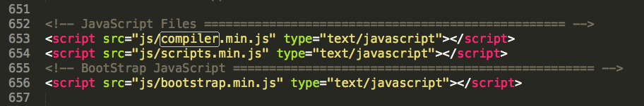

HTML FILES INCLUDED :
-
Home
- 繁體中文版 ••► home.html
- 日文版 ••► home_japanese.html
-
Products
- 繁體中文版 ••► products.html
- 日文版 ••► products_japanese.html
-
Partners
- 繁體中文版 ••► partners.html
- 日文版 ••► partners_japanese.html
-
About
- 繁體中文版 ••► about.html
- 日文版 ••► about_japanese.html
-
News
- 繁體中文版 ••► news.html
- 日文版 ••► news_japanese.html
此頁面為首頁，在 div.allWrapper 之中包含 1 header, 8 sections, 1 footer
此頁面為產品介紹頁，在 div.allWrapper 之中包含 1 header, 5 sections, 1 footer
此頁面為合作夥伴頁，在 div.allWrapper 之中包含 1 header, 2 sections, 1 footer
此頁面為公司介紹頁，在 div.allWrapper 之中包含 1 header, 5 sections, 1 footer
此頁面為新聞頁面，在 div.allWrapper 之中包含 1 header, 5 sections, 1 footer
- 主要 - CSS Style File ••► style.css
（此份檔案開頭有 CSS code 結構解說）
- 主要 - CSS Min Style File ••► style.min.css
- 動畫 - CSS3 Animations CSS Style File ••► css/css3-animations.css
- 一些小圖示 - Font Awesome CSS Style File ••► css/font-awesome.css
- 古老的IE - Special CSS Style File For Any Fixes in IE ••► css/ie.css
- RWD - Main Responsive CSS Style File ••► css/responsive.css
- RWD - Main Responsive CSS Min Style File ••► css/responsive.min.css
- Bootstrap - Bootstrap CSS Style File ••► css/bootstrap.css
- Bootstrap - Bootstrap CSS Min Style File ••► css/bootstrap.min.css
-
Skins（主視覺顏色）：
- （採用中的）VMFive Brand Style File ••► css/skins/brand-color.css
- Blue CSS Style File ••► css/skins/sample-blue.css
- Blue LESS Style File ••► css/skins/smaple-blue.less
< link rel="stylesheet" href="css/skins/brand-color.css" >
修改主視覺顏色請到 css/skinks/brand-color.css 搜尋 #FC981C 修改以下 10 個色碼：
::-moz-selection {
background-color: #FC981C;
}
::-webkit-selection {
background-color: #FC981C;
}
::-o-selection {
background-color: #FC981C;
}
::-khtml-selection {
background-color: #FC981C;
}
......
總共有三份 javascript file，以及它們各自的 minified file
你會在 div.allWrapper 之後找到它們，長得像這樣

它們分別是：
- complier.js : 把所有第三方 libraries 整合在同一份 .js 中以減少 requests 次數
- scripts.js : 包含所有 custom JS Codes(該份檔案的最底下) 和 Libs Options
- bootstrap.js : 恩，這個不用說明
除此之外，還有一些 inline scripts :
- Google Analytics: 在每一頁之中，送出 GA pageview
- Language Detect: 在每一頁之中，偵測瀏覽器語言並跳轉至對應語言頁面
- Fluid Video Hack: 在 home.html 與 products.html 之中，隨螢幕寬度自動調整 Vimeo 與 Youtube 影片區塊寬度